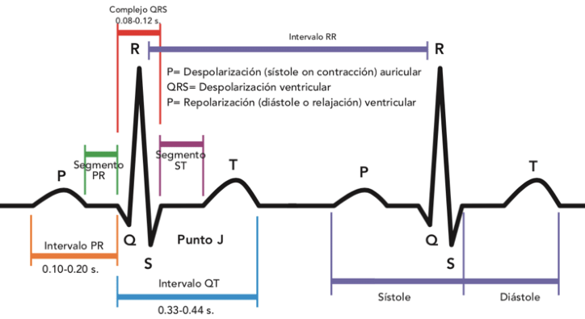

Instrucciones generales ¶
Forme un grupo de máximo dos estudiantes
Versione su trabajo usando un repositorio privado de github. Agregue a su compañero y a su profesor (usuario github: phuijse) en la pestaña Settings/Manage access. No se aceptarán consultas si la tarea no está en github. No se evaluarán tareas que no estén en github.
Se evaluará el resultado, la profundidad de su análisis y la calidad/orden de sus códigos en base al último commit antes de la fecha y hora de entrega». Se bonificará a quienes muestren un método de trabajo incremental y ordenado según el histórico de commits
Sean honestos, ríganse por el código de ética de la ACM
Tarea 2: Filtrado de señales¶
Introducción¶
Un electrocardiograma (ECG) es un gráfico de voltaje (amplitud) en función del tiempo correspondiente a la actividad eléctrica del corazón. Cada etapa del ciclo cardíaco es representado por una letra: P, Q, R, S y T. La siguiente figura muestra un esquema de un ECG con dos pulsos.
{kind=link}
El ECG se usa para hacer diagnósticos y en particular para analizar la existencia de anormalidades en el ciclo cardiaco. La frecuencia cardiaca, es decir el inverso del intervalo RR, de un humano normal en reposo está en el rango de 60 y 100 latidos por minuto
Enunciado¶
El hospital base de Valdivia tiene un electrocardiógrafo que mide la ECG en miliVolts [mV] a una frecuencia de muestreo de \(360\) [Hz]
Durante el proceso de captura ciertos errores provocaron que la señal se contamine con
(A) Un ruido asociado al sistema eléctrico
(B) Un ruido de baja frecuencia causado por un desperfecto del sensor
(C) Un ruido blanco de origen térmico
Esto complica el análisis del médico por lo que el hospital base los contrata a ustedes para diseñar un filtro que limpie la señal ECG
Resuelva las actividades que se piden a continuación, respondiendo y analizando donde corresponda
import numpy as np
import pickle
%matplotlib notebook
import matplotlib.pylab as plt
with open("ECG.pkl", "rb") as f:
data = pickle.load(f)
Fs = 360
time = np.arange(len(data))/Fs
fig, ax = plt.subplots(figsize=(7, 3), tight_layout=True)
ax.plot(time, data)
ax.set_xlabel('Tiempo [s]')
ax.set_ylabel('Amplitud [mV]');
Análisis (15%)¶
Observe los primeros dos segundos de la señal, compare con el esquema mostrado en la introducción y discuta sobre los efectos causados por los ruidos A, B y C mencionados en el enunciado. Además responda ¿Qué es un ruido blanco y que tipo de efecto introduce en la señal y en su espectro? ¿Qué es una tendencia y que tipo de efecto introduce en la señal y su espectro?
Calcule y muestre gráficamente el valor absoluto de la transformada de Fourier de la señal en función de la frecuencia y su espectrograma en función del tiempo y la frecuencia. Para el espectrograma decida el largo de ventana, traslape y tipo de ventana. Justifique su elección tomando en consideración el rango de frecuencias de un paciente normal y los trade-off aprendidos en clases
En base a la señal, su espectro de magnitud y su espectrograma identifique la frecuencia central o el rango de frecuencias asociada a las tres fuentes de ruido. ¿En qué rango de frecuencias (Hz) se espera encontrar la señal de ritmo cardíaco de un humano normal en reposo?
Filtrado FIR (50%)¶
Describa lo que es un filtro FIR, explique paso a paso el método de enventanado y describa los argumentos y el valor de retorno de la función scipy.signal.firwin.
Luego use este método para diseñar y aplicar tres filtros sobre la señal de entrada. El primero debe filtrar el ruido (A), el segundo el ruido (B) y el tercero el ruido (C). Indique la(s) frecuencia(s) de corte y el tipo de filtro en cada caso. Justifique su elección en base a sus observaciones en el paso anterior.
Considere una ventana de Hamming y \(1001\) coeficientes para el filtro
Por cada filtro:
Muestre la respuesta al impulso y la respuesta en frecuencia resultantes
Filtre la señal convolucionando con la respuesta al impulso
Calcule la resta entre la señal original y la señal filtrada. ¿Qué espera observar en este caso? Luego muestre gráficamente el espectro de magnitud y el espectrograma de la señal restada. En base a lo que observa y a los gráficos del punto anterior discuta sobre la efectividad del filtro
Finalmente
Filtre la señal convolucionando con los tres filtros. Muestre el resultado graficamente.
Muestre un acercamiento de los primeros tres segundos de la señal filtrada, reconozca la fase R y márquela con una linea roja punteada.
Cree una función que mida el tiempo RR en la señal filtrada. Grafique la frecuencia cardiaca en función del tiempo. ¿Se encuentra la persona en el rango sano o no?
Filtrado IIR (35%)¶
Describa los filtros IIR y compárelo con los filtros FIR. Describa los argumentos y el valor de retorno de la función scipy.signal.iirfilter.
Luego use este método para diseñar tres filtros. Los filtros deben cumplir el mismo propósito que en el caso anterior. Considere filtros IIR de tipo butterworth y todos del mismo orden. Aplique los filtros sobre la señal de entrada usando la función scipy.signal.lfilter.
El objetivo es encontrar el mínimo orden para los filtros IIR tal que el error medio cuadrático entre la señal filtrada IIR y la señal filtrada FIR sea menor que un 1% de la varianza de la señal filtrada FIR. Es decir que si \(x\) es la señal filtrada IIR e \(y\) es la señal filtrada FIR donde \(N = \min(\text{len}(x), \text{len}(y))\) se cumpla que
Finalmente, discuta sobre sus hallazgos muestre gráficamente el resultado del mejor filtro IIR